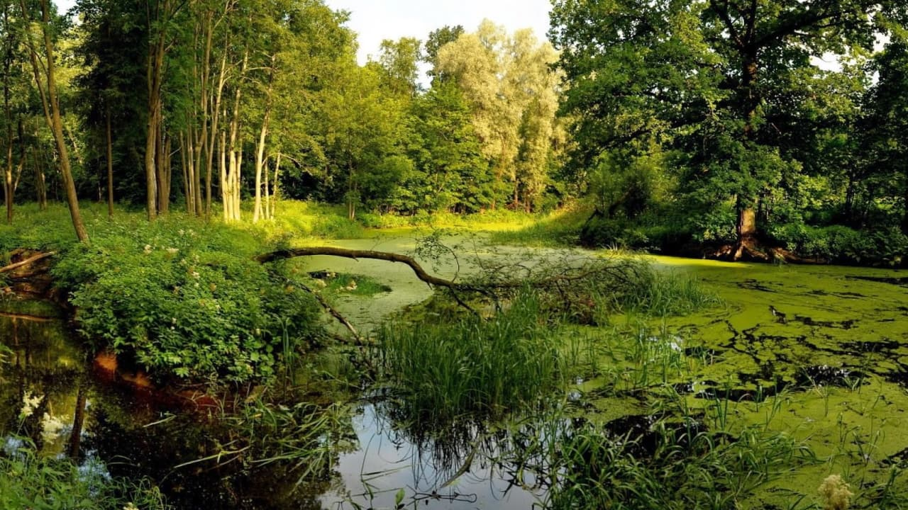
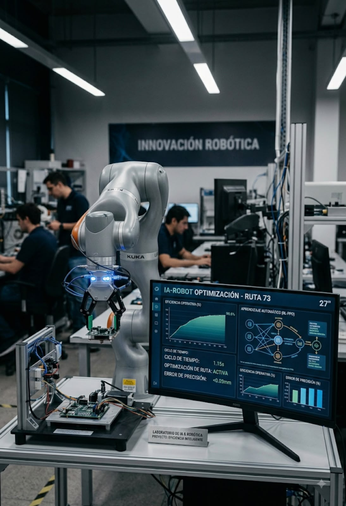
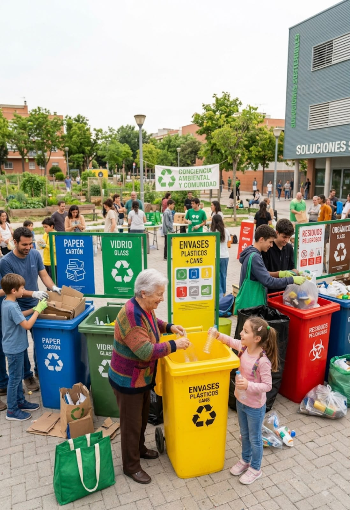
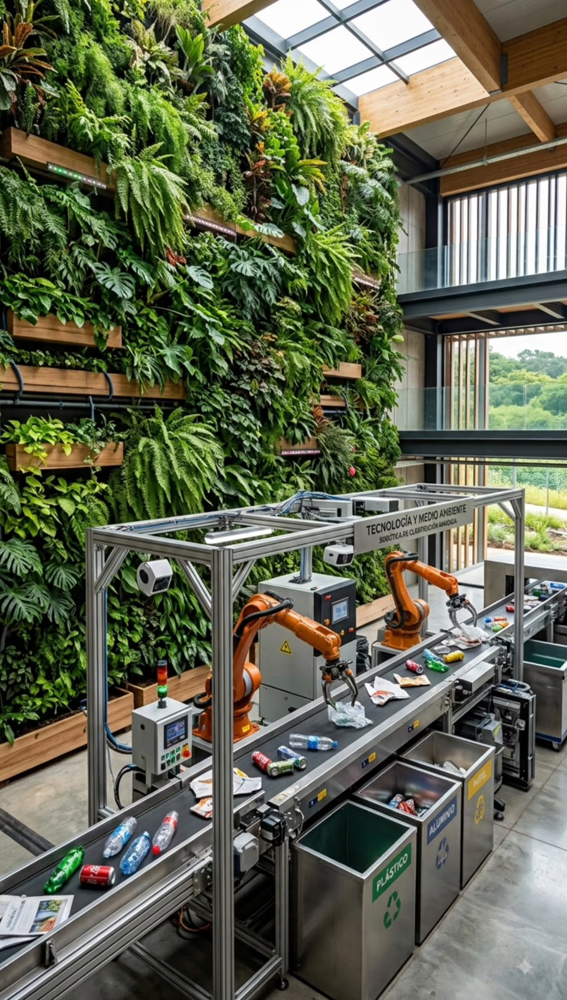

Innovación y sostenibilidad en un solo prototipo
Ecocycle consiste en un sistema inteligente para mejorar la gestión de los residuos mediante el uso de robótica, visión artificial e Inteligencia Artificial, optimizando el proceso de reciclaje y reduciendo el impacto ambiental.
Reduce la contaminación por mala disposición de residuos y mejora el reciclaje clasificando materiales reutilizables.
Motiva a la población a participar activamente mediante interacción guiada por IA en tiempo real.
Demuestra cómo la automatización y los modelos de visión procesan problemas ambientales de forma eficiente.




Ahorro energético
Reducción de emisiones
Eficiencia operativa
Horas de autonomía